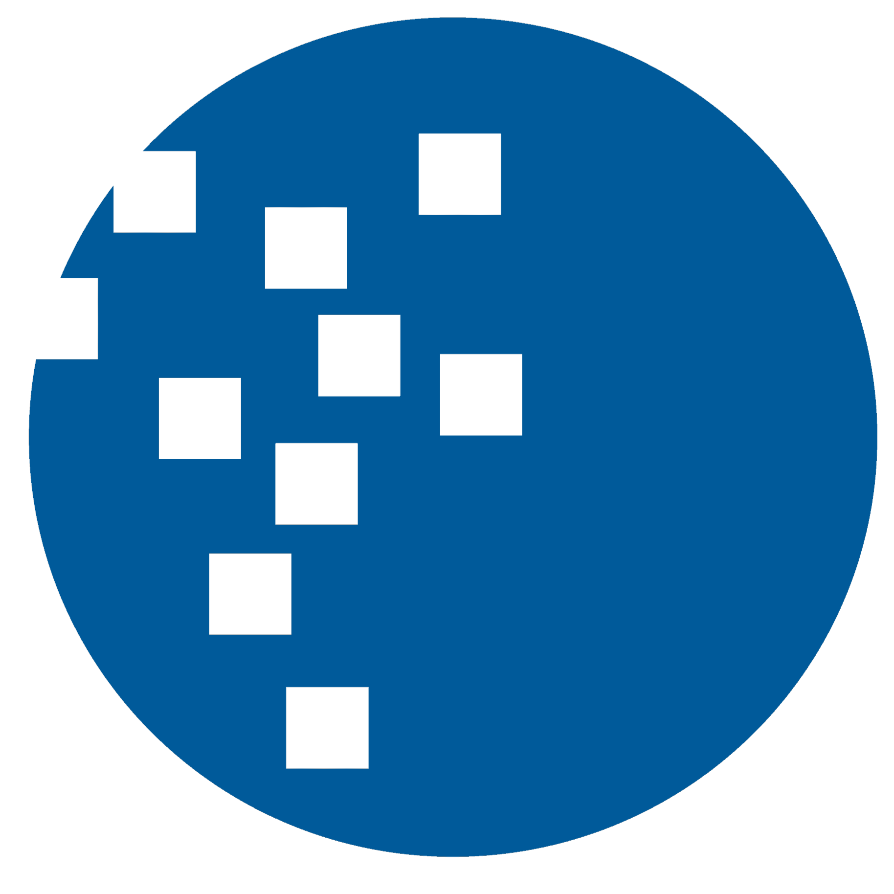

Universitas Multimedia NusantaraWeb

Beyond
academics.
academics.
UMN SoftskillMonitoring & development
Web development
Website UMN Softskill (VIBE)
Platform untuk mengelola dan memonitor soft skill mahasiswa di Universitas Multimedia Nusantara.
Lihat source code